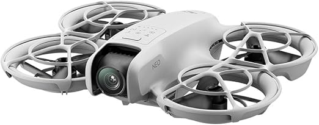
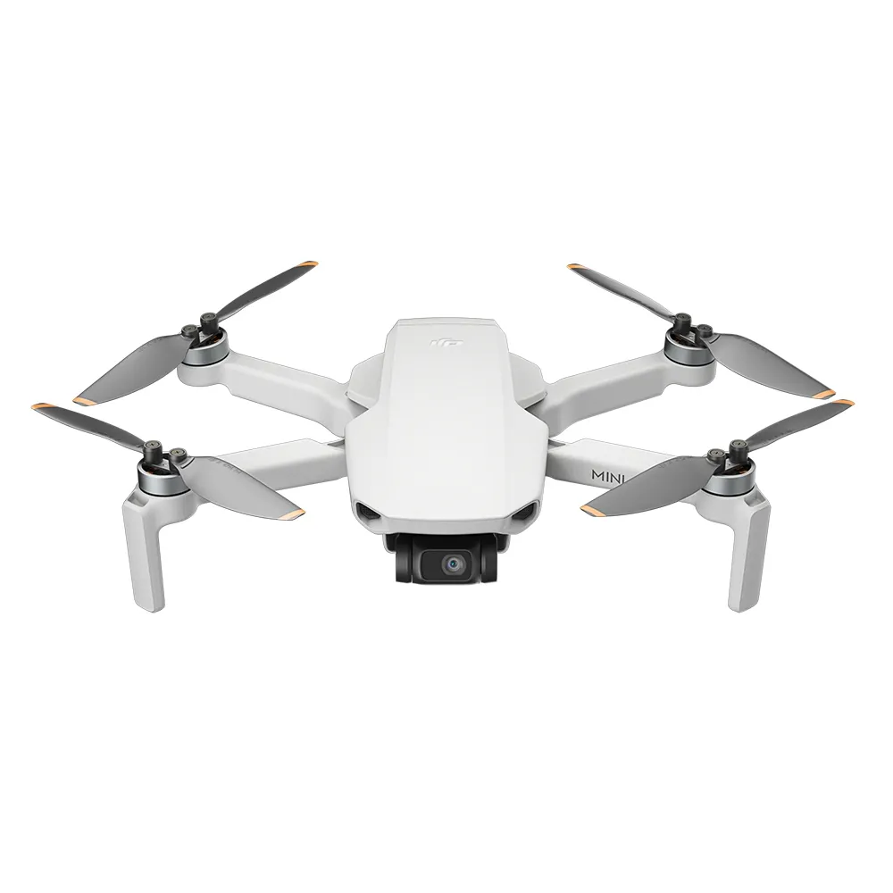
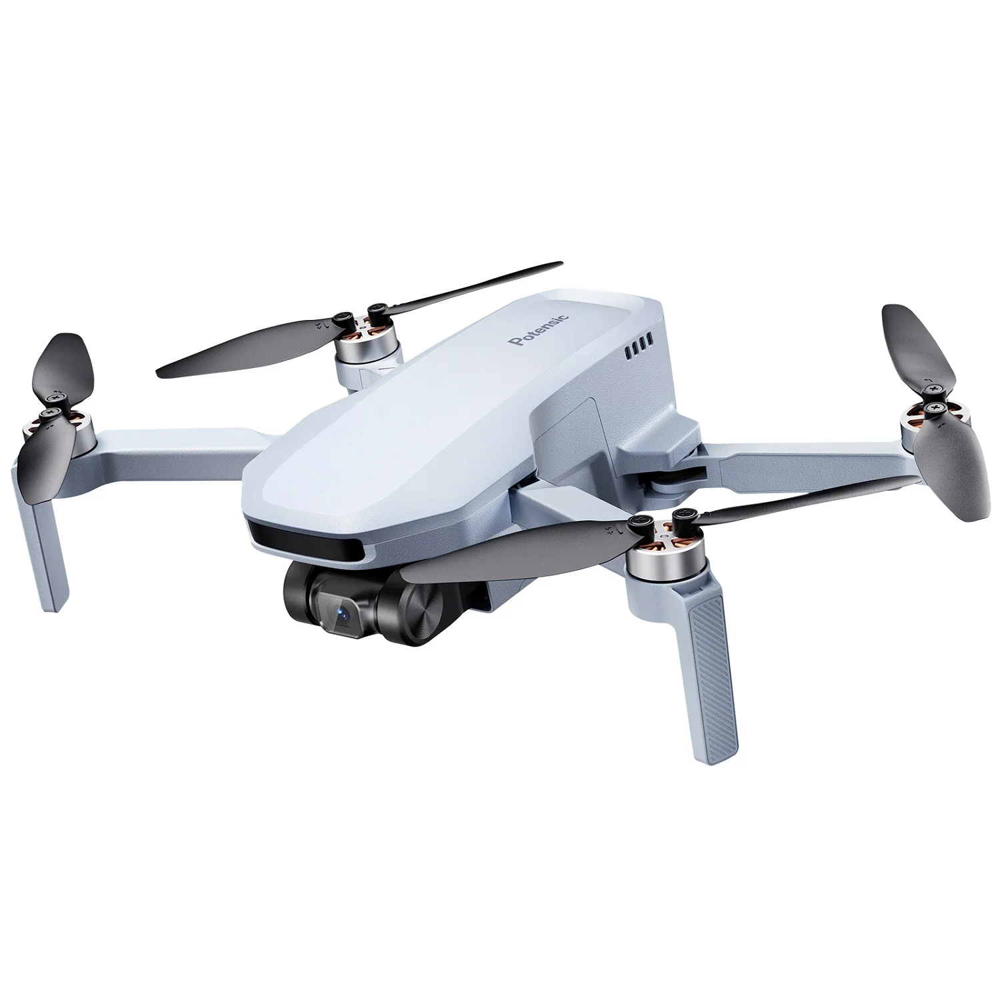
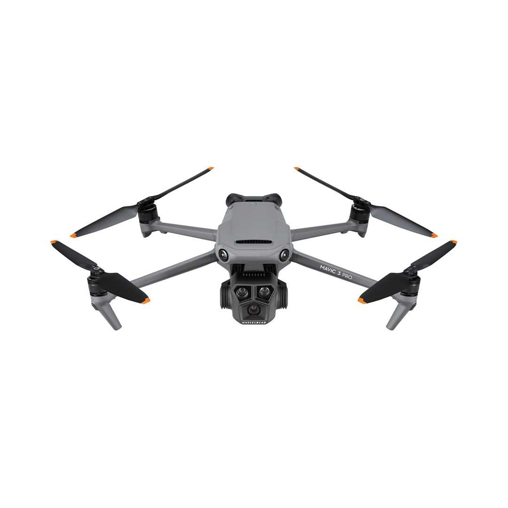
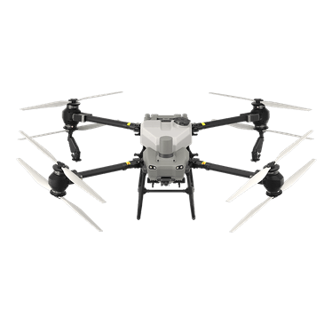
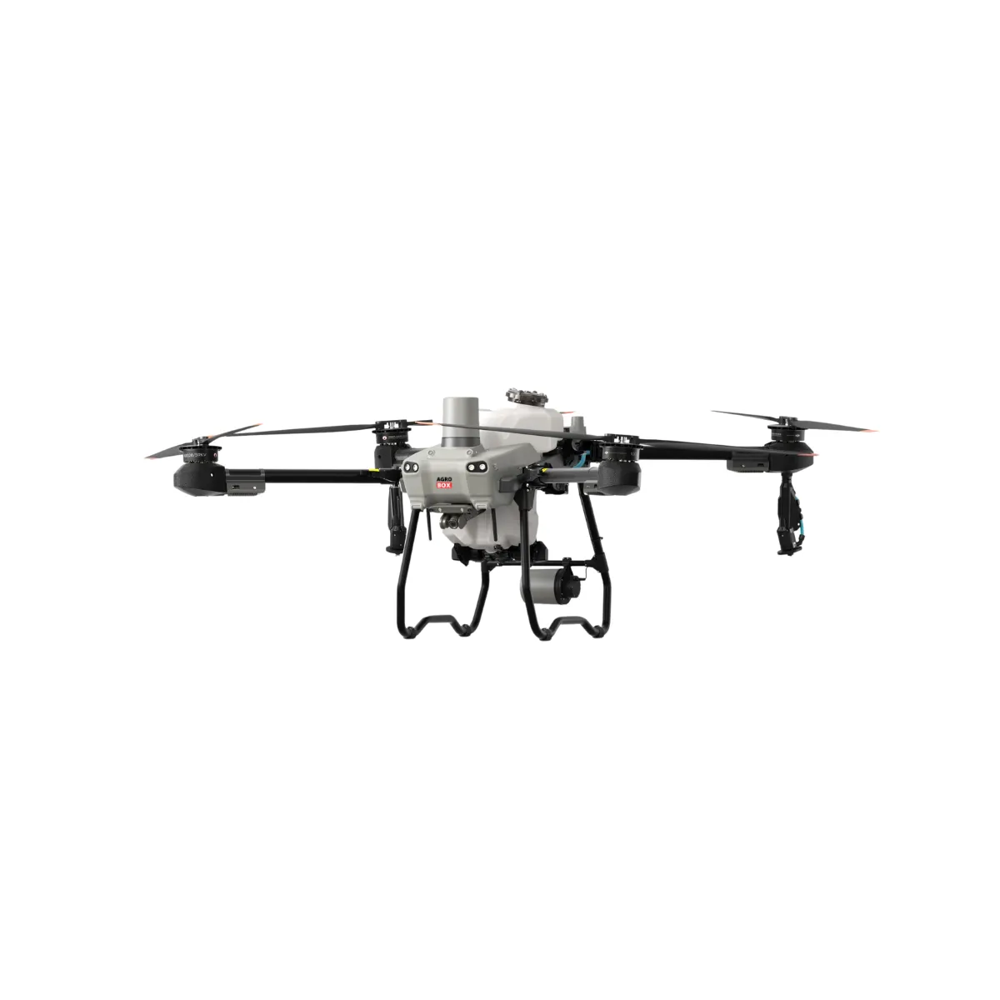

Variação de drones e suas descrições
Drones leves de entrada
- DJI050

O drone mais compacto e leve da DJI, pesando apenas 135g. É ideal para vlogs rápidos, com decolagem e pouso na palma da mão e rastreamento de IA sem a necessidade de controle remoto.
- DJI Mini 4K

A melhor porta de entrada para alta resolução. Oferece vídeos em 4K estáveis com gimbal de 3 eixos, resistência ao vento de nível 5 e transmissão de vídeo de até 10km.
- Atom Se 4k

Um competidor de peso com GPS preciso e câmera 4K. Destaca-se pelo design dobrável e o sistema de propulsão ShakeVanish, garantindo voos estáveis e fotos nítidas para iniciantes.
Drones de alta altitude
- Dji Mavic 3

O rei da cinematografia aérea com sistema de três câmeras Hasselblad. Oferece tempo de voo estendido e detecção de obstáculos omnidirecional para segurança máxima em ambientes complexos.
- Drone EVO II Pro

Focado em profissionais de mapeamento e fotografia, possui um sensor de 1 polegada que captura detalhes incríveis em 6K e não possui restrições de zona de voo (No-Fly Zones) via software.
- DJI Inspire 3

Uma ferramenta cinematográfica de elite. Suporta gravação em 8K interna, possui design transformável e precisão centimétrica via RTK, sendo o padrão ouro para produções de Hollywood.
Drones Pesados
- DJI AGRAS T50

Um gigante da agricultura de precisão. Equipado com sistema de pulverização por atomização dupla, suporta cargas de até 50kg para sementes ou fertilizantes, otimizando grandes plantações.
- DJI Mavic 3M

Especializado em análise de cultivos. Combina uma câmera visual com sensores multiespectrais para monitorar a saúde das plantas e identificar pragas antes que sejam visíveis a olho nu.
- DJI AGRAS T25

Uma versão mais ágil e versátil para operações agrícolas. Ideal para terrenos menores ou de difícil acesso, mantendo a tecnologia avançada de radar e pulverização da linha T-Series.